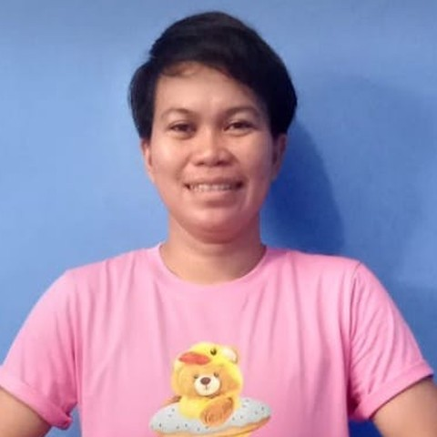

Indonesian · 36 · Elderly care & household
Four of her five Singapore placements have been elderly care — a catheter, a stroke, and a gentleman of 78 with cancer whom she nursed through his last year. His family have recommended her directly.
Trust signals
A recommendation from the family she cared for, written by the gentleman’s sister rather than by the employer on paper. She is open to speaking with families who have met Sesty.
At a glance
The essentials
Available from
End October 2026. Transfer within Singapore.
The gentleman she cared for
July 2025 to May 2026 — a man of 78 with cancer, in a wheelchair, through to the end of his life in March. Bathing, feeding, medication and the transfers; he was about her own weight, and she managed them.
Before that
2023 into 2024 — an elderly gentleman who could walk a little but fell, whose catheter she kept clean and whose medication she gave. Then a household with a grandmother who had had a stroke.
What she is like
Kind, patient and honest, in the words of the family she cared for — and steady on the hard days, which is the part that matters most in this kind of work.
Cooking & household
Simple Chinese food, and the ordinary run of the house — cleaning, laundry and marketing alongside the care.
What she is looking for
One household, and an elderly person to look after. She would rather give all of her attention to one home than divide it between several.
In Singapore since March 2023, and four of her five placements have been elderly care.
Sesty has been in Singapore since March 2023, and her work here has been eldercare almost throughout — catheters, a stroke, a wheelchair, and sitting with someone through a final illness. Her placements have been shorter than she would have liked, and the reasons are set out below.
March to June 2023. Her first job in Singapore, a household of three, registered for the care of an elderly person.
June to August 2023. An elderly couple. She looked after the grandfather — helping him walk, picking him up when he fell, keeping his catheter clean, giving his medication. It ended over something between the two of them rather than anything about her work: the grandmother did not like the attention her husband was getting.
August 2023 to March 2024. A household with a grandmother who had had a stroke, registered for elderly care and for a person with special needs. She ended this one herself, because her salary was not being paid, and the record shows it as her decision. She is willing to talk it through with a family on a call.
March 2024 to July 2025. Sixteen months with no employment registered in Singapore.
July 2025 to May 2026. The job she is recommended for. A gentleman of 78 with cancer, in a wheelchair and around sixty kilos, with his wife at home. She did the bathing, the feeding, the medication and the lifting, and stayed with him to the end. He died in March; she remained with his widow until May. His sister’s words are at the top of this page.
May 2026 to now. A young family of five, where she is registered for the care of a toddler — her first placement here that is not eldercare. She would like to go back to looking after one elderly person in one household.
Where she’d suit next. A family with an elderly parent who needs real care — someone no longer steady on their feet, or no longer mobile at all. She has done the heavy end of this work and done it gently, which is an unusual pair of things. At 36 she is physically up to transfers and has handled them before, and she can keep the house and cook simple Chinese food alongside. What she asks for is one household she can stay in for years.
Her employment record and her referee’s details are available to interested families, with her consent.
Tell us a little about your household and we’ll be in touch within 1–2 business days. We’ll only move forward if it feels like a genuine fit.